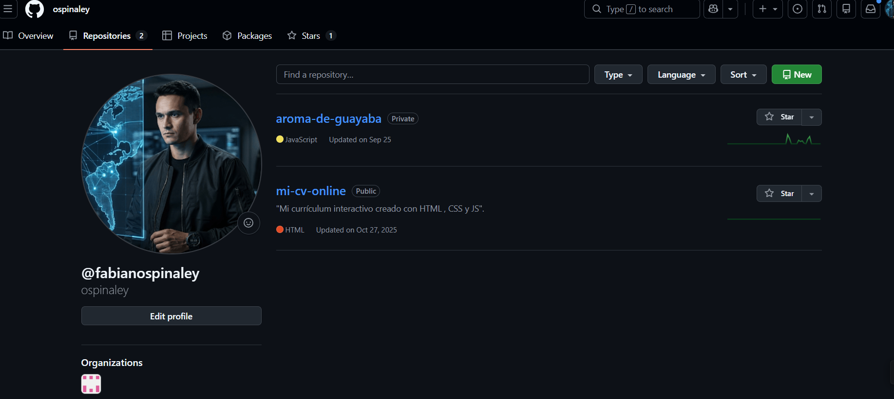
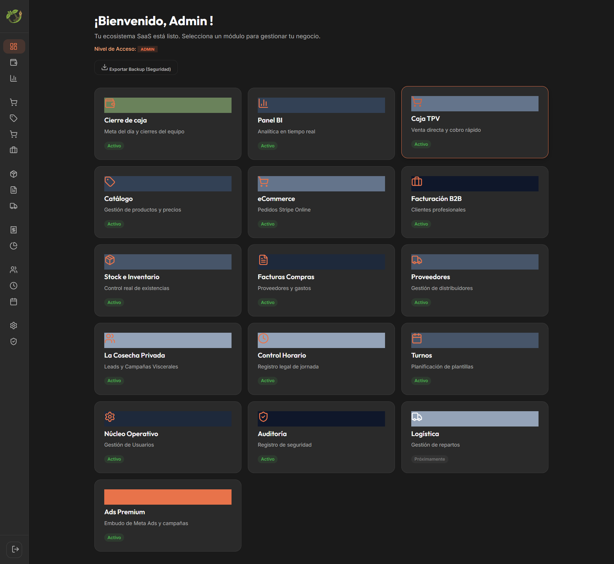
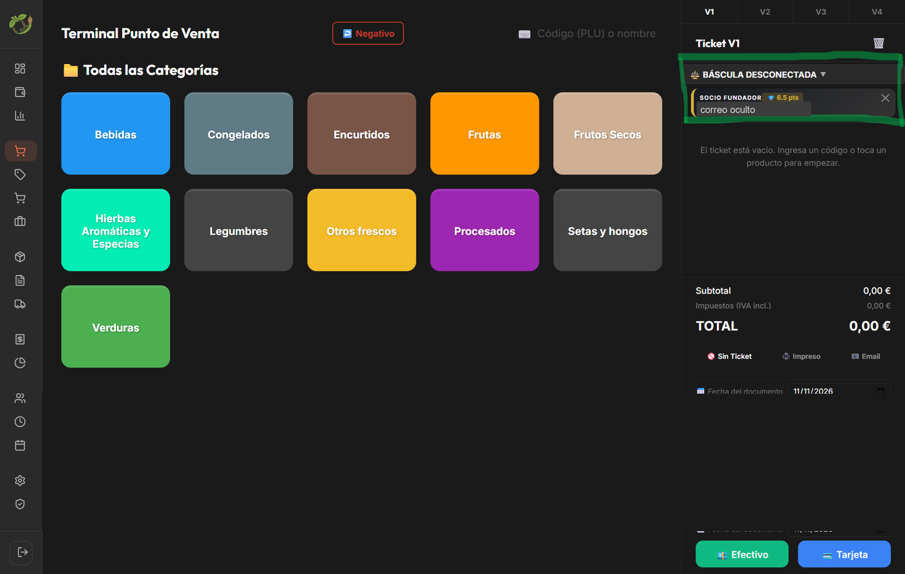
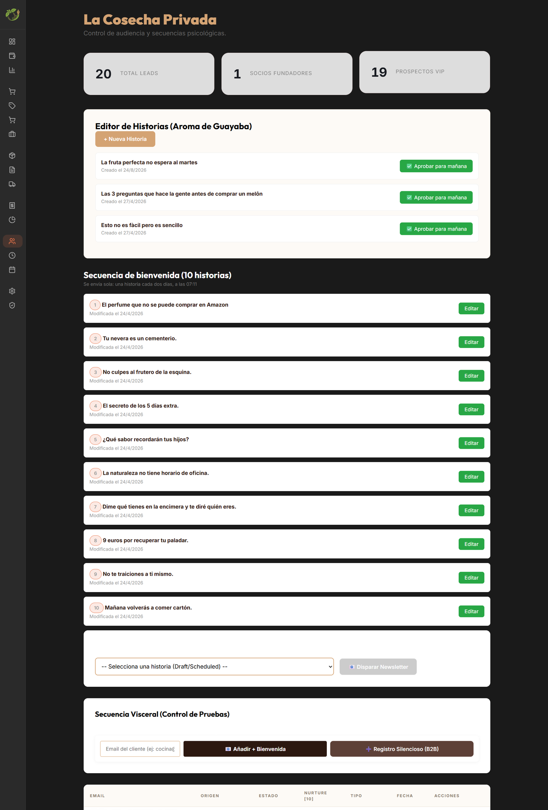
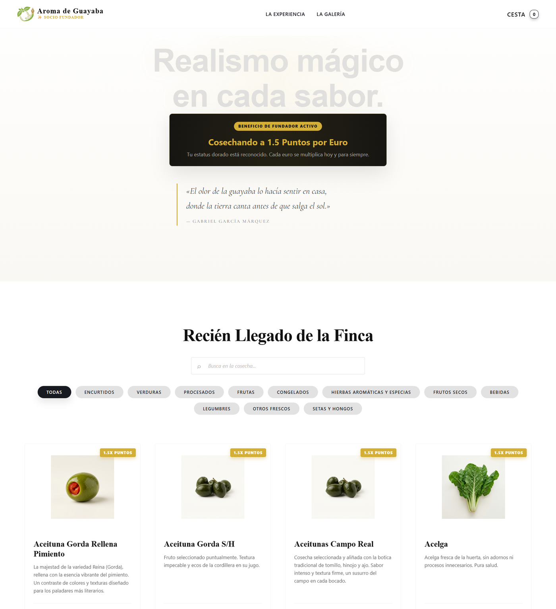
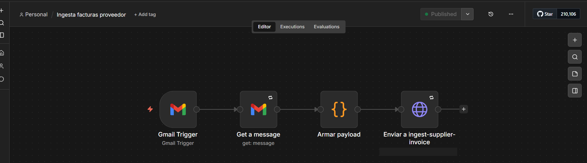

Fabian Alexander Ospina Leiva
Docente de HTML · Negocio digital y e-commerce · Experiencia comercial B2B
Madrid · 622 234 134 · fabianospinaley@gmail.com · ospinaley.github.io/mi-cv-online

Perfil
Docente habilitado para la formación profesional para el empleo (SSCE0110) con experiencia práctica en desarrollo web, e-commerce y automatización, adquirida desde febrero de 2026 en proyectos reales del negocio familiar ADG. Perfil junior en formación, con experiencia comercial y conocimientos técnicos; enseño lo que uso, paso a paso y con ejemplos que funcionan.
Formación
MF0950_2 Construcción de páginas web (módulo del certificado IFCD0110)
Mayo de 2025 · ASPASIA · 210 h en el certificado oficial · Certificado de ASPASIA pendiente de entrega.
SSCE0110 Habilitación para la docencia en grados A, B y C del sistema de formación profesional
Marzo – agosto de 2026 · ASPASIA (IBECON 2003, S.L.) · Formación ocupacional de la Comunidad de Madrid, curso FDEC_25_5205 · 284 h de teoría y 96 h de prácticas.
Seis módulos calificados como apto (programación didáctica, materiales, impartición y tutorización, evaluación, orientación laboral y prácticas no laborales). Certificación oficial de la Comunidad de Madrid pendiente de expedición.
Formación en curso: voy adelantando cuatro cursos
2026 – en curso
- IFCD0127 Desarrollo web para comercio electrónico (150 h; 29 de octubre – 15 de diciembre de 2026).
- MF0491_3 Programación web en el entorno cliente, del certificado de profesionalidad IFCD0210 Desarrollo de aplicaciones con tecnologías web (hasta el 23 de diciembre de 2026).
- MF0493_3 Implantación de aplicaciones web en entornos internet, intranet y extranet, del mismo certificado (hasta el 23 de diciembre de 2026).
- Curso de HTML de Platzi (HTML semántico, accesibilidad y SEO).
Experiencia relacionada
Desarrollo de herramientas digitales para ADG (Aroma de Guayaba)
Febrero de 2026 – actualidad · Ayuda familiar, sin contrato · Detalle y evidencias en la memoria adjunta.
- TPV, cierre de caja, turnos y gestión de roles y permisos.
- CRM de clientes con doble confirmación por correo y protección de datos.
- Tienda online con cobro por Stripe y correos de pedido (en pruebas).
Compras en Mercamadrid para la frutería familiar ADG
2022 – actualidad · Negociación con proveedores, planificación y control de costes.
Suboficial del Ejército de Colombia (Sargento Segundo, retirado)
2006 – 2018 · Como Sargento Segundo ejercí el mando y control de secciones y pelotones de combate terrestre; gestión de personas, material y logística bajo presión.
Competencias
Técnicas: HTML, CSS, JavaScript, React, git y GitHub, bases de datos (Supabase), pasarela de pago (Stripe), correo transaccional (Resend), automatización e IA aplicada.
Docentes: programación didáctica, elaboración de materiales, evaluación del aprendizaje y orientación laboral (SSCE0110).
Memoria de trayectoria digital autónoma
Fabian Alexander Ospina Leiva · Proyecto ADG (Aroma de Guayaba)
Naturaleza de este documento. Es una declaración del propio interesado sobre trabajo realizado como ayuda familiar, sin contrato ni alta en el negocio. Describe experiencia práctica real en tecnologías de la información y se acompaña de evidencias verificables (capturas e historial de versiones en GitHub). No sustituye a un certificado de empresa ni a una vida laboral.
1. Objeto
Documentar el desarrollo y el uso de herramientas digitales en el negocio familiar ADG (frutería, Madrid), como experiencia equivalente para la docencia de HTML y desarrollo web.
2. Cronología
| Fecha | Hito |
|---|
| 2022 – actualidad | Compras en Mercamadrid para ADG: relación con proveedores y control de costes. |
| Mayo de 2025 | MF0950_2 Construcción de páginas web (módulo del certificado IFCD0110), en ASPASIA. Certificado pendiente de entrega. |
| Octubre de 2025 | Aprendizaje autodidacta de git y GitHub (no formó parte del curso anterior) y publicación del CV web en GitHub Pages (mi-cv-online). |
| 15 de febrero de 2026 | Inicio del proyecto de la app de ADG: documentos de requisitos y elección del stack (Vite, React y Supabase). |
| 22 de febrero de 2026 | Base de datos en Supabase (7 tablas maestras, registro de auditoría, autenticación) y primera versión del panel con acceso por usuario. |
| Marzo – agosto de 2026 | SSCE0110 Habilitación para la docencia (284 h de teoría + 96 h de prácticas). |
| 24 – 25 de marzo de 2026 | Embudo de captación de clientes VIP: formulario de alta, entrega de correos y primeras pruebas de cobro con Stripe. |
| 5 de julio de 2026 | La aplicación ya está en producción y pasa a control de versiones con git (81 cambios registrados entre julio y octubre de 2026). |
| Agosto de 2026 | Automatización con n8n para leer facturas de proveedores recibidas por correo. |
| 9 de octubre de 2026 | Primer cierre de caja real con el TPV de ADG; sistema de roles y permisos, turnos y festivos. |
| 10 de noviembre de 2026 | Revisión del comercio electrónico: cobro, aspectos legales, envío y seguridad del CRM (en pruebas, sin publicar). |
3. Proyectos y competencias demostradas
| Proyecto | Qué hice | Competencia |
|---|
| TPV y cierre de caja | Aplicación web con turnos, cierre de caja con desglose, cuadre con el ticket de la báscula, permisos por rol. | JavaScript, estructura de datos, lógica de negocio |
| CRM de clientes | Alta con doble confirmación, puntos de fidelización, protección de campos sensibles. | Bases de datos, seguridad, protección de datos |
| Tienda online | Catálogo, cesta, cobro con Stripe, correos de pedido con Resend, política legal. | E-commerce, integración de servicios |
| Portafolio web | CV publicado con HTML, CSS y JavaScript en GitHub Pages. | HTML semántico, publicación, git |
4. Evidencias

Evidencia 1 · Repositorios en GitHub. La app de ADG está en un repositorio privado (aroma-de-guayaba); este CV, en uno público (mi-cv-online).

Evidencia 2 · Panel de administración con los módulos de la app: cierre de caja, TPV, catálogo, tienda online, facturas, proveedores, turnos, control horario y auditoría.

Evidencia 3 · Terminal punto de venta (TPV) con un cliente socio fundador y sus puntos. El correo del cliente está oculto.

Evidencia 4 · CRM de clientes («La Cosecha Privada»): contador de contactos, editor de historias y secuencia de bienvenida de 10 correos. La lista de contactos no se muestra por protección de datos.

Evidencia 5 · Tienda online (entorno de pruebas): catálogo con filtros por categoría, búsqueda y puntos de fidelización.

Evidencia 6 · Automatización con n8n: flujo «Ingesta facturas proveedor» (publicado). Lee las facturas de proveedores que llegan por Gmail y las envía a la app para registrarlas.
Evidencia 7 · Historial de versiones de la app: 81 cambios registrados entre el 5 de julio y el 30 de octubre de 2026 (16 de ellos el 9 de octubre, día del primer cierre real). Se puede mostrar en directo en una entrevista.
Cómo se ha construido: trabajar con IA con criterio
El desarrollo de las herramientas de ADG se ha hecho con asistencia de inteligencia artificial: la IA escribe y propone, y yo dirijo. Para colaborar con ella de forma eficaz, eficiente, ética y segura aplico el marco de las 4D de la fluidez en IA (Delegación, Descripción, Discernimiento y Diligencia). Además, en cada tarea decido si conviene automatizar (que la IA la haga sola), aumentar (que trabajemos juntos) o darle agencia (que actúe por su cuenta dentro de los límites que yo marco).
| Competencia | Qué significa | Cómo la aplico en ADG |
|---|
| Delegación | Decidir qué hago yo y qué encargo a la IA, y para qué. | Primero defino qué problema resuelve cada módulo (TPV, CRM, tienda). La IA programa; las decisiones de negocio, de seguridad y de publicación son mías. |
| Descripción | Explicar con claridad qué quiero y qué es un buen resultado. | Antes de programar escribí documentos de requisitos (general, técnico y transversal), y cada encargo lleva contexto, límites y criterio de éxito. |
| Discernimiento | Evaluar con ojo crítico lo que produce la IA. | No doy nada por bueno sin probarlo. El cobro y la seguridad se revisaron en varias rondas de verificación, que detectaron fallos reales anotados para corregir antes de publicar. |
| Diligencia | Asumir la responsabilidad de lo que se hace y se publica. | Nada se publica sin mi aprobación. Protejo los datos de los clientes (acceso por roles, doble confirmación por correo) y declaro abiertamente el uso de IA, como en este documento. |
Es una forma real y actual de trabajar, y es también lo que puedo enseñar: a usar la IA con criterio, sin delegar en ella la responsabilidad.
5. Declaración
Declaro que lo descrito es cierto y estoy disponible para demostrar cualquier punto en una entrevista o clase de prueba.
Madrid, a 11 de noviembre de 2026
Fdo.: Fabian Alexander Ospina Leiva